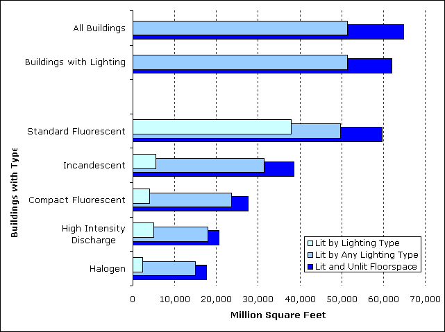
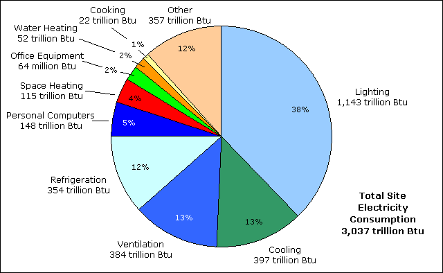
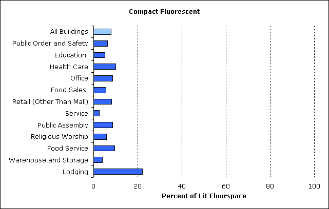
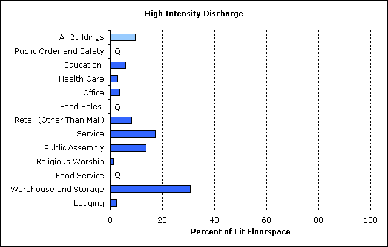
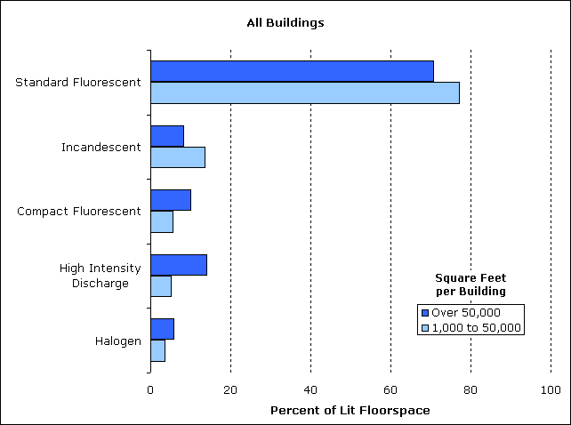
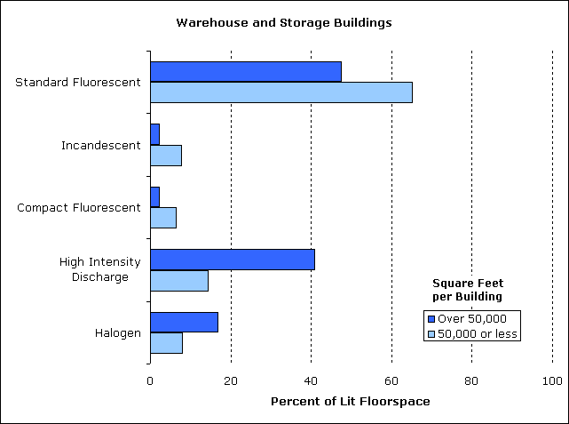
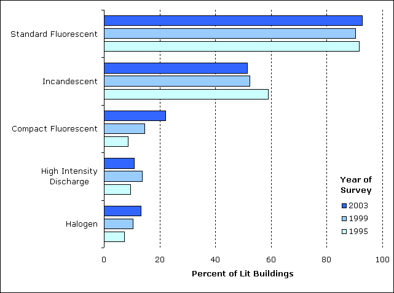
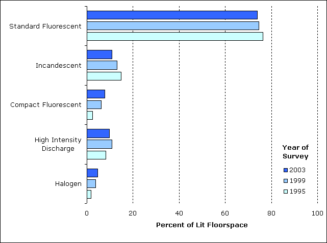

Introduction
Lighting is a major consumer of electricity in commercial buildings and a target for energy savings through use of energy-efficient light sources along with other advanced lighting technologies. The Commercial Buildings Energy Consumption Survey (CBECS) collects information on types of lighting equipment, the amount of floorspace that is lit, and the percentage of floorspace lit by each type. In addition, CBECS data are used to model end-use consumption, including energy consumed for lighting in commercial buildings.
CBECS building characteristics data can answer a wide range of questions about lighting from the most basic, “How many buildings are lit?” to more detailed questions such as, “How many office buildings have compact fluorescent lamps and how much area do they illuminate?”
CBECS collects information on 5 types of lamps:
These 5 types have different lighting characteristics. Fluorescent lamps are more energy efficient and last longer than incandescent lamps or halogen lamps (a type of incandescent lamp), but the latter two have light characteristics that may be preferred in some settings. High intensity discharge lamps are energy efficient and are especially effective in illuminating large areas; in commercial buildings, they are primarily used in buildings with open, high-ceiling spaces (e.g., auditoriums or storage areas).
Measures of Lighting Use
The following table summarizes lighting data for all (non-mall) commercial buildings from the 2003 CBECS and the graphic in Figure 1 illustrates the differences between the measures of floorspace.
Table 1. Measures of Lighting by Type of Lighting, 2003
| Buildings (thousand) |
Total Lit and Unlit Floorspace (million sq. ft.) |
Total Lit Floorspace (million sq. ft.) |
Total Lit by Each Lighting Type (million sq. ft.) |
|
|---|---|---|---|---|
| All Buildings | 4,645 | 64,783 | 51,342 | NA |
| Buildings with Lighting | 4,248 | 62,060 | 51,342 | NA |
| Buildings with Lighting Equipment Types | ||||
| —Standard Fluorescent | 3,943 | 59,688 | 49,691 | 37,918 |
| —Incandescent | 2,184 | 38,528 | 31,489 | 5,556 |
| —Compact Fluorescent | 941 | 27,571 | 23,610 | 4,004 |
| —High Intensity Discharge | 455 | 20,643 | 17,913 | 4,950 |
| —Halogen | 565 | 17,703 | 14,999 | 2,403 |
| —Other | 8 | 269 | 244 | 6 |
| NA=Not applicable. Note: Data are for non-mall buildings. Source: Energy Information Administration, 2003 Commercial Buildings Energy Consumption Survey. |
||||
- The first column, “Buildings,” is a straightforward measure—each value is the number of buildings (as specified by the row category).
- The second column, “Total Lit and Unlit Floorspace” refers to total floorspace.
- The third column, “Total Lit Floorspace ” excludes the areas in buildings that are not lit.
- The fourth column, “Total Lit by Each Lighting Type” is the most restrictive floorspace measure and refers to only the area illuminated by the specified lighting equipment.
Figure 1. Illustration of floorspace measures.

Nearly all commercial buildings have some type of lighting (91 percent of buildings are lit) (Table 1). The majority of those without lighting are warehouses and vacant buildings. Standard fluorescent lamps are widely used—85 percent of commercial buildings use these lamps. Nearly half of buildings (47 percent) use incandescent lamps and one-fifth (20 percent) use compact fluorescent lamps.
The floorspace values of the third column of Table 1 exclude areas within lit buildings that are not illuminated (such as storage or maintenance areas) and we can compare the lighted areas with these data. However, these statistics tell us nothing about the actual coverage by each lighting type. In buildings with standard fluorescent lighting, for example, the floorspace that is illuminated by any type is 49,691 million square feet. Two different buildings that would contribute equally to this value are an office building where all space was completely lit with fluorescent lamps and a warehouse building of the same size that has a single small room with fluorescent lighting but the rest of the building—the warehouse space—is illuminated by high intensity discharge lamps. Both have fluorescent lighting and both are completely illuminated, but the value in the table tells us nothing of the amount of area lit by the fluorescent lamps.
To measure coverage by lighting type, we use the last data column of Table 1. (See Table L3 for more complete data for 2003.) Figure 2 illustrates the dramatic difference in lit floorspace between fluorescent lamps and the other types (compare the bars for "Lit by Lighting Type").
- Standard fluorescent lamps illuminate three-fourths of lit floorspace in buildings.
- Incandescent lamps are used by about half of lit buildings but illuminate just 11 percent of the total lit area.
- The other lighting types—compact fluorescent, high intensity discharge, and halogen—each illuminate less than 10 percent of lit floorspace.
Figure 2. Nearly all floorspace in commercial buildings is illuminated.
Note: Data are for non-mall buildings.
Source: Energy Information Administration, 2003 Commercial Buildings Energy Consumption Survey.
Energy Consumed by Lighting
Lighting is a significant consumer of energy in commercial buildings. Figure 3 shows total energy consumed by major energy sources by end use for commercial buildings in 2003. When we look at only electricity (Figure 4), we see that more electricity is consumed by lighting than any other individual end use.
Figure 3. One-fifth of total site energy is consumed by lighting in commercial buildings.
Note: Data are for non-mall buildings. Total consumption includes 4 energy sources: electricity, natural gas, fuel oil, and district heat. Site consumption excludes energy used to generate and transmit electricity.
Source: Energy Information Administration, 2003 Commercial Buildings Energy Consumption Survey, Table E1.
Figure 4. More site electricity is consumed for lighting than for any other end use.
Note: Data are for non-mall buildings. Site electricity excludes energy used to generate and transmit electricity.
Source: Energy Information Administration, 2003 Commercial Buildings Energy Consumption Survey, Table E3.
Lighting and Principal Building Activity
More floorspace is lit in office buildings than any other commercial building type (more than 10 billion square feet or 21 percent of total lit floorspace) (Figure 5 and Table 2). Three building types—office, education, and warehouse and storage buildings—account for 53 percent of total lit floorspace and 50 percent of total (lit and unlit) floorspace.
The amount of lit floorspace generally tracks the amount of lit and unlit floorspace compared by building activity (Figure 5). The two exceptions are education and health care buildings. Both rank higher in amount of lit floorspace because a larger percentage of their total floorspace is lit. The percentage of lit floorspace for all buildings is 79 percent while it is 91 percent for education buildings and 93 percent for health care buildings.
Figure 5. Office, education, and warehouse and storage buildings account for more than half of total lit floorspace in commercial buildings.

Note: Data are for non-mall buildings.
Source: Energy Information Administration, 2003 Commercial Buildings Energy Consumption Survey.
Table 2. Total floorspace and lit floorspace by lighting type and principal building activity
| Total
Lit and Unlit Area (million square feet) |
Total Lit Area (million square feet) |
Floorspace Lit by Each Type of Light (million square feet) |
|||||
|---|---|---|---|---|---|---|---|
| Standard Fluorescent |
Incandescent | Compact Fluorescent |
High |
Halogen | |||
| All Buildings | 64,783 | 51,342 | 37,918 | 5,556 | 4,004 | 4,950 | 2,403 |
| Principal Building Activity | |||||||
| —Education | 9,874 | 8,983 | 7,692 | 489 | 461 | 520 | 191 |
| —Food Sales | 1,255 | 1,129 | 941 | 51 | 64 | Q | Q |
| —Food Service | 1,654 | 1,391 | 837 | 421 | 134 | Q | 72 |
| —Health Care | 3,163 | 2,937 | 2,501 | 267 | 294 | 85 | 83 |
| —Lodging | 5,096 | 3,901 | 2,112 | 1,215 | 864 | 88 | 142 |
| —Retail (Other than Mall) | 4,317 | 3,795 | 2,852 | 515 | 305 | 310 | 168 |
| —Office | 12,208 | 10,846 | 9,231 | 730 | 942 | 382 | 268 |
| —Public Assembly | 3,939 | 2,807 | 1,876 | 339 | 241 | 386 | 166 |
| —Public Order and Safety | 1,090 | 940 | 856 | 58 | 58 | Q | Q |
| —Religious Worship | 3,754 | 2,419 | 1,543 | 755 | 139 | 28 | 105 |
| —Service | 4,050 | 3,348 | 2,445 | 221 | 84 | 580 | 136 |
| —Warehouse and Storage | 10,078 | 7,136 | 3,878 | 309 | 277 | 2,184 | 955 |
| —Other | 1,738 | 1,582 | 1,058 | 159 | 138 | 241 | 52 |
| —Vacant | 2,567 | 129 | 95 | Q | Q | Q | Q |
| Q=Data withheld because the Relative Standard Error (RSE) was greater than 50 percent, or fewer than 20 buildings were sampled. Note: Data are for non-mall buildings. Source: Energy Information Administration, 2003 Commercial Buildings Energy Consumption Survey. |
|||||||
The total amount of electricity consumed for lighting varies significantly across building types (Figure 6). The amount consumed by office buildings greatly exceeds the amount consumed by any other type of building. Office buildings have more lit floorspace than any building type and they consume more electricity for all end uses.
Figure 6. Office buildings consume more than twice as much site electricity for lighting as any building type.

Note: Data are for non-mall buildings. Site electricity excludes energy used to generate and transmit electricity.
Source: Energy Information Administration, 2003 Commercial Buildings Energy Consumption Survey, Table E3.
Standard Fluorescent Lamps
The following 5 graphs (Figures 7-11) show percent of floorspace lit by each of the major lighting types for the principal building activities (the order of the activities is the same for all 5 graphs).
Standard fluorescent lamps illuminate the most floorspace for all major types of commercial buildings. These lamps provide ambient lighting as well as task lighting in buildings.
- Standard fluorescent lamps illuminate a total of 74 percent of lit commercial floorspace (Figure 7).
- For each of the major building types, at least half of lit floorspace is lit by fluorescent lamps.
- For the first 5 building types, fluorescent lamps illuminate more than 80 percent of the floorspace.
Figure 7. Standard fluorescent lighting, by far, illuminates the greatest amount of floorspace in commercial buildings.

Note: Data are for non-mall buildings.
Source: Energy Information Administration, 2003 Commercial Buildings Energy Consumption Survey.
Incandescent Lamps
- Three types of buildings—religious worship, food service, and lodging—have significantly greater space illuminated by incandescent lamps (more than 30 percent of lit floorspace for each).
- Only two other building types, retail (other than mall) and public assembly, exceed 11 percent, the average for all buildings (Figure 8).
Figure 8. Incandescent lamps illuminate the second most amount of floorspace.

Note: Data are for non-mall buildings.
Source: Energy Information Administration, 2003 Commercial Buildings Energy Consumption Survey.
Compact Fluorescent Lamps
- In lodging buildings, compact fluorescent lamps illuminate 22 percent of floorspace, more than twice as much as any other building type (Figure 9).
- All other building types use these lamps to light 10 percent or less of floorspace.
Figure 9. Compact fluorescent lamps illuminate just a small portion of floorspace in most building types.
Note: Data are for non-mall buildings.
Source: Energy Information Administration, 2003 Commercial Buildings Energy Consumption Survey.
High Intensity Discharge Lamps
- The building types that use the greatest percentage of high intensity discharge (HID) lamps include buildings with open, high-ceiling spaces (Figure 10).
- HID lamps are used the most in warehouse and storage buildings, where they illuminate nearly one-third (31 percent) of lit floorspace.
- Service buildings, which include vehicle storage, and vehicle service and repair buildings, have 17 percent of their floorspace lit by HID lamps.
- Public assembly buildings, which include sports arenas and theaters, have 14 percent of their floorspace illuminated by HID lamps.
Figure 10. High intensity discharge (HID) lamps are primarily used to illuminate open, high ceiling areas.
Q=Data withheld because the Relative Standard Error (RSE) was greater than 50 percent, or fewer than 20 buildings were sampled.
Note: Data are for non-mall buildings.
Source: Energy Information Administration, 2003 Commercial Buildings Energy Consumption Survey.
Halogen Lamps
- Halogen lamps are a type of incandescent lamp that also have superior light quality and color rendition characteristics.
- The use of halogen lamps in commercial buildings is fairly limited. Their greatest use is in warehouse and storage buildings, where they illuminate 13 percent of the floorspace (Figure 11).
- In all other types, halogen lamps illuminate 6 or less percent of floorspace.
Figure 11. Halogen lamps are used for just a fraction of floorspace in buildings.

Q=Data withheld because the Relative Standard Error (RSE) was greater than 50 percent, or fewer than 20 buildings were sampled.
Note: Data are for non-mall buildings.
Source: Energy Information Administration, 2003 Commercial Buildings Energy Consumption Survey.
Lighting and Building Size and Year Constructed
Building Size
Smaller commercial buildings are much more numerous than larger commercial buildings, but comprise less total floorspace—the 1,001 to 5,000 square feet category includes more than half of total buildings, but just 11 percent of total floorspace. In contrast, just 5 percent of buildings are larger than 50,000 square feet, but they account for half of total floorspace.
Lighting consumes 38 percent of total site electricity. Larger buildings consume relatively more electricity for lighting than smaller buildings. Nearly half (47%) of electricity is consumed by lighting in the largest buildings (larger than 500,000 square feet). In the smallest buildings (1,001 to 5,000 square feet), one-fourth of electricity goes to lighting (Figure 12).
Figure 12. Larger buildings consume relatively more site electricity for lighting.

Note: Data are for non-mall buildings. Site electricity excludes energy used to generate and transmit electricity.
Source: Energy Information Administration, 2003 Commercial Buildings Energy Consumption Survey, Table E3.
When compared by size, commercial buildings show significant differences in the percentage of floorspace lit by each of the major lighting types.
- In smaller buildings, a larger percentage of lit floorspace is illuminated by standard fluorescent and incandescent lights (Figure 13 and Table 3).
- In larger buildings, compact fluorescent, high intensity discharge, and halogen lamps illuminate a larger percentage of floorspace.
Figure 13. Standard fluorescent and incandescent lamps are more widely used in smaller commercial buildings.
Note: Data are for non-mall buildings.
Source: Energy Information Administration, 2003 Commercial Buildings Energy Consumption Survey.
Office buildings and warehouse and storage buildings (along with education buildings) have the greatest amount of total and lit floorspace. The types of lighting used, and percentage of floorspace lit by each, are different for office buildings and warehouse and storage buildings. The following two graphs (Figures 14 and 15) illustrate differences in lighting based on building size for these two building types.
- More floorspace is lit by compact fluorescent and HID lamps in larger office buildings (Figure 14 and Table 3).
- Less floorspace is lit by standard fluorescent lamps in larger office buildings.
Figure 14. More than twice as much floorspace is illuminated by compact fluorescent lamps in larger offices than in smaller offices.
 Note: Data are for non-mall buildings.
Note: Data are for non-mall buildings.
Source: Energy Information Administration, 2003 Commercial Buildings Energy Consumption Survey.
- In smaller warehouse buildings, two-thirds of lit floorspace is illuminated by standard fluorescent lamps while less than half is illuminated in larger warehouses (Figure 15 and Table 3 ).
- In large warehouses, only 2 percent of lit floorspace is illuminated by incandescent lights compared with 8 percent in small warehouses.
Figure 15. More than 40 percent of lit floorspace is illuminated by high intensity lamps in larger warehouses, 3 times as much as in smaller warehouses.

Note: Data are for non-mall buildings.
Source: Energy Information Administration, 2003 Commercial Buildings Energy Consumption Survey.
Table 3. Total lit floorspace by lighting type and size of building
| Total Lit Area (million square feet) |
Floorspace Lit by Each Type of Light (million square feet) |
|||||
|---|---|---|---|---|---|---|
| Standard Fluorescent |
Incandescent | Compact Fluorescent |
High |
Halogen | ||
| All Buildings | 51,342 | 37,918 | 5,556 | 4,004 | 4,950 | 2,403 |
| Size of Building | ||||||
| —1,001 to 5,000 | 4,826 | 3,932 | 678 | 206 | 76 | 124 |
| —5,001 to 50,000 | 20,137 | 15,325 | 2,700 | 1,173 | 1,198 | 778 |
| —Over 50,000 | 26,379 | 18,661 | 2,178 | 2,625 | 3,676 | 1,501 |
| Office Buildings | 10,846 | 9,231 | 730 | 942 | 382 | 268 |
| —1,001 to 50,000 | 4,861 | 4,315 | 374 | 225 | 62 | 76 |
| —Over 50,000 | 5,985 | 4,917 | 356 | 717 | 320 | 192 |
| Warehouse and Storage Buildings | 7,136 | 3,878 | 309 | 277 | 2,184 | 955 |
| —1,001 to 50,000 | 2,769 | 1,806 | 217 | 174 | 396 | 222 |
| —Over 50,000 | 4,368 | 2,072 | 92 | 103 | 1,788 | 733 |
| Note: Data are for non-mall buildings. Source: Energy Information Administration, 2003 Commercial Buildings Energy Consumption Survey. |
||||||
Year Constructed
About one-quarter of commercial buildings have been constructed since 1990. When we compare this fraction of commercial buildings with those constructed before 1990 we see significant differences in the amount of floorspace lit by the major lighting types (Figure 16 and Table 4).
- More recently constructed buildings have greater percentage of floorspace illuminated by compact fluorescent, HID, and halogen lamps (Figure 16).
- Older buildings have a greater percentage of floorspace lit by standard fluorescent lamps.
Figure 16. Halogen and high intensity discharge lamps illuminate more floorspace in the most recently constructed buildings.

Note: Data are for non-mall buildings.
Source: Energy Information Administration, 2003 Commercial Buildings Energy Consumption Survey.
Table 4. Total lit floorspace by lighting type and year constructed
| Total Lit Area (million square feet) |
Floorspace Lit by Each Type of Light (million square feet) |
|||||
|---|---|---|---|---|---|---|
| Standard Fluorescent |
Incandescent | Compact Fluorescent |
High |
Halogen | ||
| All Buildings | 51,342 | 37,918 | 5,556 | 4,004 | 4,950 | 2,403 |
| Year Constructed | ||||||
| —Before 1990 | 36,925 | 28,131 | 4,204 | 2,522 | 2,896 | 1,323 |
| —1990 to 2003 | 14,417 | 9,787 | 1,353 | 1,482 | 2,054 | 1,080 |
| Note: Data are for non-mall buildings. Source: Energy Information Administration, 2003 Commercial Buildings Energy Consumption Survey. |
||||||
Changes in Lighting
The percentage of commercial buildings with lighting was unchanged between 1995 and 2003; however, three lighting types did show change in usage. Compact fluorescent lamps and halogen lamps showed a significant increase between 1995 and 2003 while the use of incandescent lights declined. The lighting questions in the 1995, 1999, and 2003 CBECS questionnaires were virtually identical which facilitates comparison across survey years.
- The use of compact fluorescent lamps more than doubled, from just under 10 percent of lit buildings to more than 20 percent (Figure 17 and Table 5).
- The use of halogen lamps nearly doubled, from 7 percent to 13 percent of lit buildings.
- Use of incandescent lights was the only lighting type to decline; their use dropped from 59 percent to just over one-half of lit buildings.
- Standard fluorescent lamps and high intensity discharge lamps showed no significant change in use.
Figure 17. The percentage of buildings that use compact fluorescent lamps more than doubled between 1995 and 2003.
Note: Data are for non-mall buildings.
Source: Energy Information Administration, 1995, 1999, and 2003 Commercial Buildings Energy Consumption Survey.
Table 5. Types of Lighting Used in Commercial Buildings by Year of Survey
| Total Lit Buildings (thousand ) |
Buildings Lit by Each Type of Light (thousand) |
|||||
|---|---|---|---|---|---|---|
| Standard Fluorescent |
Incandescent | Compact Fluorescent |
High |
Halogen | ||
| Year of Survey (All Buildings) |
||||||
| 2003 | 4,248 | 3,943 | 2,184 | 941 | 455 | 565 |
| 1999 | 4,038 | 3,647 | 2,116 | 590 | 550 | 416 |
| 1995 | 4,095 | 3,750 | 2,415 | 355 | 385 | 295 |
| Note: Data are for non-mall buildings. Source: Energy Information Administration; 1995, 1999, and 2003 Commercial Buildings Energy Consumption Survey. |
||||||
- The percentage of floorspace lit by compact fluorescent lamps nearly tripled, from 3 percent in 1995 to 8 percent in 2003 (Figure 18 and Table 6).
- Halogen lamps showed a significant increase, from 2 percent to 5 percent.
- The percentage of floorspace illuminated by incandescent lamps declined between 1995 and 2003, from 15 percent to 11 percent.
- Neither standard fluorescent lamps or high intensity discharge lamps showed significant changes in the percentage of floorspace that was illuminated.
Figure 18. The percentage of floorspace illuminated by compact fluorescent and halogen lamps more than doubled between 1995 and 2003.
Note: Data are for non-mall buildings.
Source: Energy Information Administration, 1995, 1999, and 2003 Commercial Buildings Energy Consumption Survey.
Table 6. Floorspace Lit by Types of Lighting by Year of Survey
| Total Lit Area (million square feet) |
Floorspace Lit by Each Type of Light (million square feet) |
|||||
|---|---|---|---|---|---|---|
| Standard Fluorescent |
Incandescent | Compact Fluorescent |
High |
Halogen | ||
| Year of Survey (All Buildings) |
||||||
| 2003 | 51,342 | 37,918 | 5,556 | 4,004 | 4,950 | 2,403 |
| 1999 | 49,779 | 37,150 | 6,496 | 3,058 | 5,343 | 1,913 |
| 1995 | 45,773 | 34,910 | 6,746 | 1,161 | 3,725 | 779 |
| Note: Data are for non-mall buildings. Source: Energy Information Adminitration; 1995, 1999, and 2003 Commercial Buildings Energy Consumption Survey. |
||||||
Supporting Information
Lighting Types
The following are the most widely used types of lighting equipment used in commercial buildings. Characteristics such as energy efficiency, light quality, and lifetime vary by lamp type.
Standard Fluorescent
A fluorescent lamp consists of a sealed gas-filled tube. The gas in the tube consists of a mixture of low pressure mercury vapor and an inert gas such as argon. The inner surface of the tube has a coating of phosphor powder. When an electrical current is applied to electrodes in the tube, the mercury vapor emits ultraviolet radiation which then causes the phosphor coating to emit visible light (the process is termed fluorescence).
A ballast is required to regulate and control the current and voltage. Two types of ballasts are used, magnetic and electronic. Electronic ballasts have several characteristics that make them attractive. They are more energy efficient, they permit lamps to start quickly, and they eliminate lamp flicker.
Compact Fluorescent
A compact fluorescent lamp (CFL) produces light the same way as a standard fluorescent lamp. A CFL has a small diameter tube that is arranged in a shape and style that is more compact than a standard fluorescent lamp. A CFL with a built-in ballast may have a screw-base and can replace a screw-in incandescent bulb. Other CFLs have a pin base that fit into fixtures with built-in ballasts.
Incandescent
An incandescent lamp produces light by applying electrical current to a tungsten filament. The filament is mounted in a glass bulb that is filled with an inert gas such as nitrogen and/or argon. The filament when heated by the current emits visible light. Incandescent lamps are energy inefficient and only convert five to ten percent of the input energy into visible light with the rest converted to heat.
High Intensity Discharge
A high intensity discharge (HID) lamp produces light by an electrical arc discharge between two tungsten electrodes in a sealed arc tube mounted within an outer bulb. This lamp requires a ballast to start and regulate the arc. There are several types of HID lamps, including mercury vapor, metal halide, and high pressure sodium lamps.
Halogen
A halogen lamp is a type of incandescent lamp, but they are longer lasting than standard incandescent lamps. This lamp also uses a tungsten filament; however it is enclosed in a halogen gas-filled (iodine or bromine) quartz capsule and is operated at a higher temperature than an incandescent lamp.
Characteristics of Lighting Types
Efficacy
Efficacy is the amount of light produced per unit of energy consumed, expressed in lumens per watt (lm/W). Lamps with a higher efficacy value are more energy efficient.
Average Rated Life
The average rated life of a particular type of lamp is defined by the number of hours when 50 percent of a large sample of that type of lamp has failed.
Color Rendering Index (CRI)
The CRI is a measurement of a light source’s accuracy in rendering different colors when compared to a reference light source. The highest attainable CRI is 100. Lamps with CRIs above 70 are typically used in office and living environments.
Correlated Color Temperature (CCT)
The CCT is an indicator of the “warmth” or “coolness” of the color appearance of the lamp’s light. The CCT is given in the Kelvin (K) temperature scale, and the higher the color temperature, the cooler the appearance of the light. Below 3,200 K, the light has a “warm” appearance and above 4,000 K the light has a “cool” appearance.
Typical Values of Major Lighting Characteristics
| Type of Lighting | Efficacy (lumens/W) |
Typical Rated Lifetime (hours) |
Color Rendering Index | Correlated Color Temperature (K) |
|---|---|---|---|---|
| Incandescent | 10-19 | 750-2,500 | 97 | 2,500-3,000 |
| Halogen | 14-20 | 2,000-3,500 | 99 | 2,800-3,000 |
| Standard Fluorescent | ||||
| —T5 | 25-55 | 6,000-7,500 | 52-75 | 3,000-6,500 |
| —T8 | 35-87 | 7,500-20,000 | 52-90 | 3,000-6,500 |
| —T12 | 35-92 | 7,500-20,000 | 50-92 | 3,000-7,500 |
| Compact Fluorescent | 40-70 | 10,000 | 82 | 2,700-6,500 |
| High Intensity Discharge (HID) | ||||
| —Mercury Vapor | 25-50 | 29,000 | 15-50 | 4,000-7,000 |
| —Metal Halide | 50-115 | 3,000-20,000 | 65-90 | 3,000-4,400 |
| —High Pressure Sodium | 50-124 | 29,000 | 22 | 1,900-2,200 |
Source: 2008 Buildings Energy Data Book, Table 5.6.9, Office of Energy Efficiency and Renewable Energy, U.S. Department of Energy (buildingsdatabook.eren.doe.gov); U.S. Lighting Market Characterization, Vol. 1: National Lighting Inventory and Energy Consumption Estimate, Office of Energy Efficiency and Renewable Energy, U.S. Department of Energy (www1.eere.energy.gov/buildings/ssl/tech_reports.html/lmc_vol1_final.pdf.
Lighting in Commercial Buildings
Introduction
Lighting and Principal Building Activity
Lighting and Building Size and Year Constructed
Changes in Lighting
Return to: CBECS Home Page
Specific questions may be directed to:
Alan Swenson
Alan Swenson
Date released: April, 2009